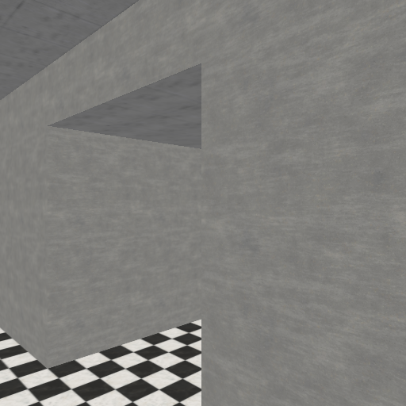
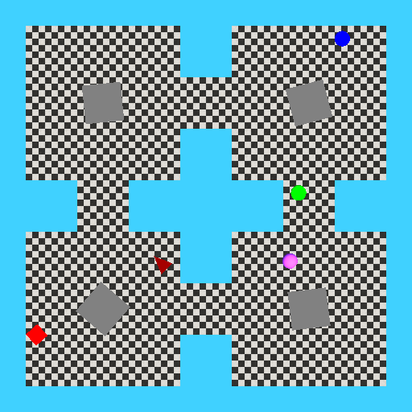
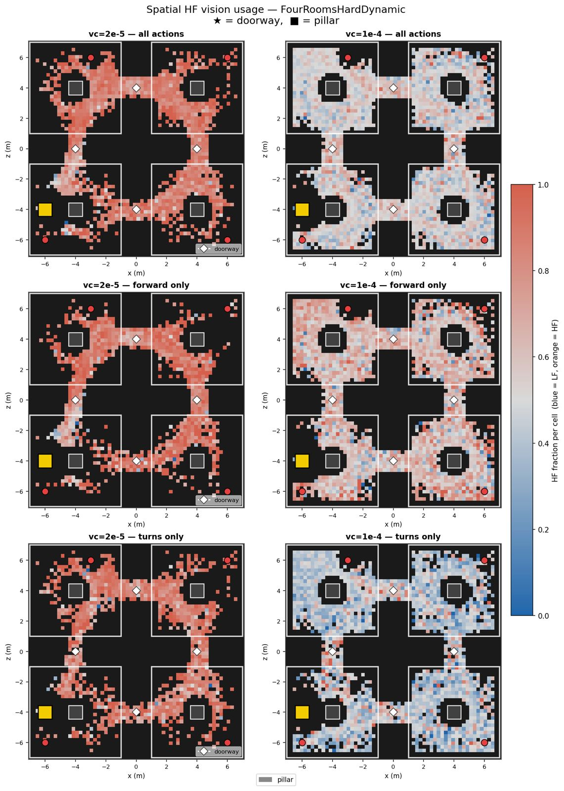
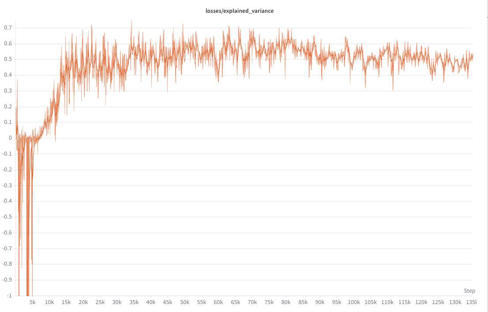
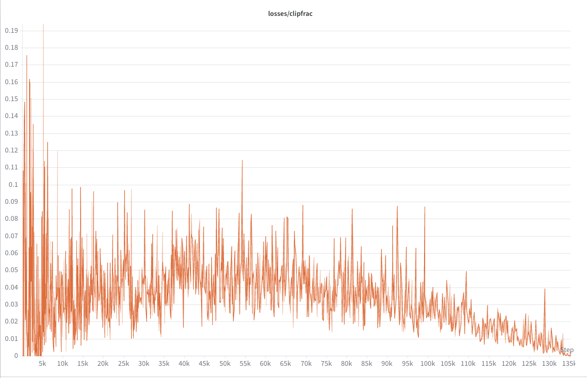
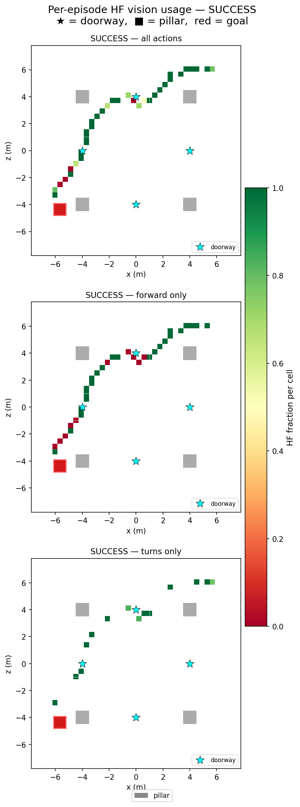
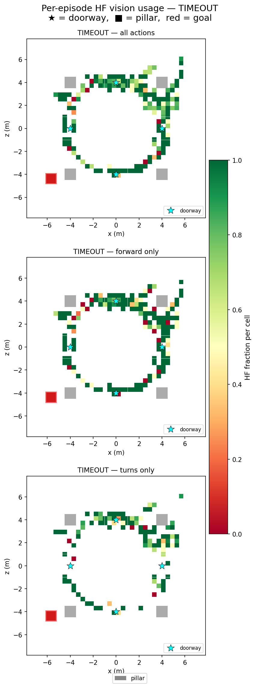

Biological vision does not process every frame at full temporal resolution — a phenomenon known as Critical Flicker Fusion (CFF). Most reinforcement learning agents, however, receive a fresh visual frame at every environment step, introducing temporal redundancy and raising the question: is continuous high-frequency observation actually necessary for effective learning?
We train three agent variants that are architecturally identical (Nature-CNN + LSTM + PPO) but differ only in their observation rate: Agent A receives a fresh 64×64 grayscale frame every step (35 Hz baseline); Agent B holds each frame for 7 steps via a StroboscopicWrapper (~5 Hz); and Agent C v2 doubles the action space to 3 moves × 2 frequency modes, paying a small per-step cost for high-frequency perception and learning when to activate it. We evaluate all agents on MiniWorld FourRoomsHard under both a static regime (fixed obstacles, tests sample efficiency) and a dynamic regime (moving obstacles, tests reactive fidelity).
On the hard dynamic environment, Agent C v2 achieves 98.8% success with only 9.8 collisions per episode, compared to Agent A's 93.3% / 85.24 collisions and Agent B's catastrophic 26.4% failure rate. Spatial analysis reveals that C v2 concentrates high-frequency perception near doorways and pillars — an interpretable, emergent form of active attention. Stroboscopic degradation alone is insufficient for dynamic tasks, but adaptive perception delivers Pareto-optimal performance across both speed and collision avoidance.
Animals perceive the world at widely varying temporal resolutions — honeybees process around 300 frames per second, humans around 60, and the critical threshold below which flickering appears continuous (the Critical Flicker Fusion frequency) is shaped by metabolic rate and ecological demand [Healy et al., 2013]. Evolution has tuned perceptual sampling rates to balance energy cost against information gain, rather than maximising temporal resolution unconditionally.
Reinforcement learning agents typically receive a fresh visual observation at every environment step, mimicking always-on, full-resolution sensing. This design choice introduces two problems: (1) consecutive frames are highly correlated, offering little additional information per step; and (2) visual sensing costs compute and, in physical systems, energy. Yet the effect of reducing observation frequency is surprisingly under-studied — most prior work on temporal abstraction focuses on action repetition rather than observation frequency.
We frame two complementary research questions:
We test these hypotheses on MiniWorld FourRoomsHard [Chevalier-Boisvert et al.], a 3D egocentric navigation environment with pillars, distractors, and (in the dynamic variant) moving obstacles. All three agents share an identical LSTM PPO backbone and are trained under the same hyperparameters — only the perception wrapper differs. Our main contributions are:
Braylan et al. [2015] showed that the frame-skip parameter is one of the most powerful design choices in Atari RL, with large effects on both convergence speed and final performance. Subsequent work by Lakshminarayanan et al. [2017] and Kalyanakrishnan et al. [2021] systematically analysed when repeating actions for multiple steps helps vs. hurts. Dabney et al. [2017] introduced Dynamic Frame Skip DQN, allowing the agent to choose how many times to repeat each action. Critically, all of these works manipulate how long an action is held, while the visual observation is still refreshed at the underlying environment rate. Our work is complementary: we fix action frequency but vary observation frequency, a dimension that has received far less attention.
Bajcsy [1988] argued that perception should be goal-directed and resource-aware — a sensor should decide where and when to look based on task demand. More recently, Shang and Ryoo [2023] applied this principle to RL under limited visual observability, training agents to select which regions of the image to foviate. Karamzade et al. [2024] addressed learning under delayed observations using world models. Our Agent C v2 takes a different angle: instead of selecting spatial regions, it selects temporal frequency as the resource to manage, trading a per-step vision cost for high-resolution observation when uncertainty is high.
Deep Q-Networks [Mnih et al., 2015] established visual RL on Atari, but sample efficiency remained a central challenge. DrQ [Kostrikov et al., 2021] addressed this via image augmentation, while Dreamer [Hafner et al., 2020] uses a world model for imagination-based planning. None of these approaches treat observation frequency as a resource; they assume full-rate sensing throughout training and evaluation. Our work asks whether a simpler intervention — reducing the observation rate — can provide complementary efficiency gains.
Healy et al. [2013] demonstrated that CFF scales with mass-specific metabolic rate across vertebrates, providing a biological grounding for our hypothesis that lower temporal resolution is not just a constraint but an adaptation. Recent work in sports science [Zwierko et al., 2024; Wang et al., 2025] has shown that stroboscopic training — deliberately occluding vision during practice — can improve attentional and perceptual-motor performance in human athletes. This supports the idea that reduced temporal resolution can act as a form of useful regularisation, rather than simply removing information.
We use MiniWorld FourRoomsHard, a custom extension of the MiniWorld 3D egocentric navigation library [Chevalier-Boisvert et al.]. The agent observes a 64×64 grayscale first-person view and must reach an orange goal box within 500 steps. The hard variant adds four fixed pillar obstacles and 1–3 coloured ball distractors that do not indicate the goal location. The action space contains three discrete moves: turn left, turn right (10° per step), and move forward.
We evaluate under two regimes:

First-person agent view (64×64 grayscale)

Top-down map (pillars shown as dark squares)
All three agents share an identical neural network backbone trained with Proximal Policy Optimisation (PPO) in the CleanRL single-file style, with 16 parallel environments and 256-step rollouts.
Nature-CNN (3 conv layers) + FC(512) + LSTM(256) · CleanRL · 16 parallel envs · 256-step rollouts · 6M total timesteps
The LSTM provides temporal context without requiring frame stacking, which is important for Agents B and C v2 where consecutive frames may be identical (stale). The CNN encoder is shared between the actor and critic. An optional proprioceptive extension appends previous action (one-hot), previous reward, and heading (sin/cos) to the LSTM input.
All perception differences are isolated in gym.Wrapper classes, so the
PPO agent itself is unchanged. Three wrappers correspond to the three agent groups:
gate_alpha annealed from 0→1 over 2M–6M steps) gradually zeros the
CNN features on stale frames, encouraging the agent to rely on LSTM memory rather
than outdated visual information once the gate is active.
All agents are trained for 6M environment steps on MiniWorld FourRoomsHard with the hyperparameters below. Evaluation uses 50 episodes per seed, averaged over 3 seeds (1000–1002). The baseline for all comparisons is Agent A at 35 Hz.
| Hyperparameter | Value |
|---|---|
| Total timesteps | 6M |
| Parallel environments | 16 |
| Rollout steps | 256 |
| Learning rate | 2.5 × 10⁻⁴ |
| Discount γ | 0.99 |
| GAE λ | 0.95 |
| PPO clip coefficient | 0.1 |
| Entropy coefficient | 0.01 (phase 1: 0.02) |
| LSTM hidden size | 256 |
| Turn step | 10° |
| Strobe k (Agent B / C v2 LF) | 7 (~5 Hz) |
| Vision cost c (Agent C v2) | 0.0001 |
We report success rate (mean ± std over 3 seeds), mean episode length (Steps), Stops-and-Looks (S&Ls, Agent C v1 only), high-frequency action rate (HF Rate), and mean collisions per episode (Hard Dynamic only).
| Agent | Success Rate | Steps | S&Ls | HF Rate | Collisions |
|---|---|---|---|---|---|
| Easy Static | |||||
| Agent A (35 Hz) | 0.984 ± 0.008 | 59.17 | — | — | — |
| Agent B (5 Hz) | 0.704 ± 0.038 | 132.38 | — | — | — |
| Agent C v1 | 0.776 ± 0.008 | 115.92 | 13.74 | — | — |
| Agent C v2 | 0.904 ± 0.034 | 88.61 | — | 0.713 | — |
| Hard Static | |||||
| Agent A (35 Hz) | 0.840 ± 0.031 | 345.25 | — | — | — |
| Agent B (5 Hz) | 0.780 ± 0.042 | 433.19 | — | — | — |
| C v2 (static-trained) | 0.852 ± 0.055 | — | — | 0.807 | — |
| C v2 (dynamic-trained) | 0.888 ± 0.016 | 258.18 | — | 0.842 | — |
| Hard Dynamic | |||||
| Agent A (35 Hz) | 0.933 ± 0.024 | 279.97 | — | — | 85.24 |
| Agent B (5 Hz) | 0.264 ± 0.034 | 802.78 | — | — | 174.75 |
| Agent C v2 | 0.988 ± 0.009 | 189.41 | — | 0.823 | 9.8 |
S&Ls = Stops-and-Look actions (Agent C v1 only). HF Rate = fraction of steps using high-frequency perception. Collisions reported for Hard Dynamic only. Best results per column in bold.
On the Easy Static environment, Agent A's full frame rate is advantageous — it achieves 98.4% success with the fewest steps. However, Agent C v2 closes the gap significantly (90.4%) while using high-frequency perception only 71% of the time, suggesting it has learned to be selective. Agent B at 5 Hz performs markedly worse (70.4%), indicating that pure stroboscopic degradation is not beneficial when the task is tractable.
On the Hard Dynamic environment, the contrast is stark. Agent B collapses to 26.4% — the moving obstacle triggers temporal aliasing that the fixed 5 Hz rate cannot handle. Agent A (33 Hz, continuous) achieves 93.3% but accumulates 85.24 collisions per episode. Agent C v2 dominates on all metrics: 98.8% success, 189 steps (fastest navigation), and only 9.8 collisions — a nearly 9× reduction relative to Agent A.
To understand where Agent C v2 (vision cost 2×10⁻⁵) uses high-frequency perception, we record episode rollouts and accumulate the fraction of steps in each spatial cell where the agent chose the high-freq action, broken down by action type.

Spatial HF vision usage in FourRoomsHardDynamic. Orange/red = high-freq; blue = low-freq. Left column: vc = 2×10⁻⁵ | Right column: vc = 1×10⁻⁴. Rows: all actions / forward only / turns only. White diamonds mark doorways; grey squares are pillars; yellow square is the goal.
A clear spatial structure emerges: Agent C v2 consistently activates high-frequency perception around doorways and near pillars. In open areas of rooms, the agent relies on low-frequency (stale) frames. The effect is strongest for turning actions, suggesting the agent has learned that navigating through narrow passages requires up-to-date visual information. A higher vision cost (1×10⁻⁴) produces a more focused, selective pattern — mostly concentrated near doorways — while the lower cost (2×10⁻⁵) shows broader high-freq usage across the map.
The training curves below show two PPO diagnostics for Agent C v2 with vision cost 2×10⁻⁵. Explained variance measures how well the value function predicts returns (higher is better); clip fraction tracks how often the PPO surrogate objective is clipped (should stabilise near zero late in training).

Explained variance converges from negative values to ~0.5, indicating the value function learns to predict returns effectively after an initial instability.

Clip fraction starts high (~0.18) during early exploration and steadily decreases toward zero, indicating the policy updates become more conservative as training matures.
Heatmap overlays show spatial high-frequency usage for the same episodes.


Three key design changes were made during development, each with a measurable impact on performance. Success rates are reported on the Hard Static environment unless noted.
The original STOP_AND_LOOK action (pause movement to get a fresh frame)
proved unnatural: it conflates movement policy with perception policy in a single
action. The agent failed to learn to use it effectively.
Easy: 0.776 → Hard: 0.044
Fine-grained 10° turns gave Agent B a higher-dimensional navigation
problem — requiring more precise perception to avoid overturning. Switching to
coarser 45° turns reduced the burden and significantly boosted Agent B's success
on easy static tasks.
At 10°: 0.388 → At 45°: 0.704
The initial C v2 training failed to learn useful perception switching.
Adding the LSTM gate curriculum (gate_alpha 0→1 over 2M–6M steps) plus
a higher entropy coefficient in phase 1 gave the agent time to explore
both frequency modes before committing to a perception policy.
Before: 0.373 → After: 0.988
This work investigated whether CFF-inspired frame rate degradation can improve reinforcement learning performance, and whether agents can learn to control their own perceptual rate. Three conclusions stand out:
Natural extensions include applying the active-vision formulation to real robotic platforms where visual sensing has genuine energy costs, extending to continuous action spaces, and investigating whether the LSTM gate curriculum generalises to other forms of active sensing (e.g., spatial foveation or event cameras). The finding that reduced frame rate can be complementary to standard RL improvements like DrQ or Dreamer also warrants investigation.